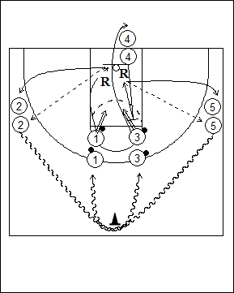

Catégorie : REBOND (Reb-14)
Déroulement
- Cinq files de joueurs. Deux files avec ballons aux extrémités de la ligne des lancers-francs. Deux files à hauteur de la ligne des lancers-francs le long des sidelines. La dernière file d’un côté de l’anneau à la baseline.
- Le premier joueur de la file 1 shoote, réalise le rebond offensif et effectue la passe vers le premier joueur de la file 2. Le premier joueur de la file 3 shoote devant le premier joueur de la file 4 qui réalise le rebond défensif suivi de l’outlet pass au premier joueur de la file 5.
- 1 va dans la file 2; 2 dribble derrière le cône de la ligne médiane et va dans la file 3; 3 va dans la file 4; 4 va dans la file 5; 5 dribble derrière le cône central et va dans la file 1.
Coaching points
- On peut demander à 1 de reshooter après le rebond offensif.
- Si le panier de 3 est réussi, 4 doit faire la remise en jeu derrière la baseline.
- On peut demander le rebond offensif à droite et le rebond défensif à gauche.